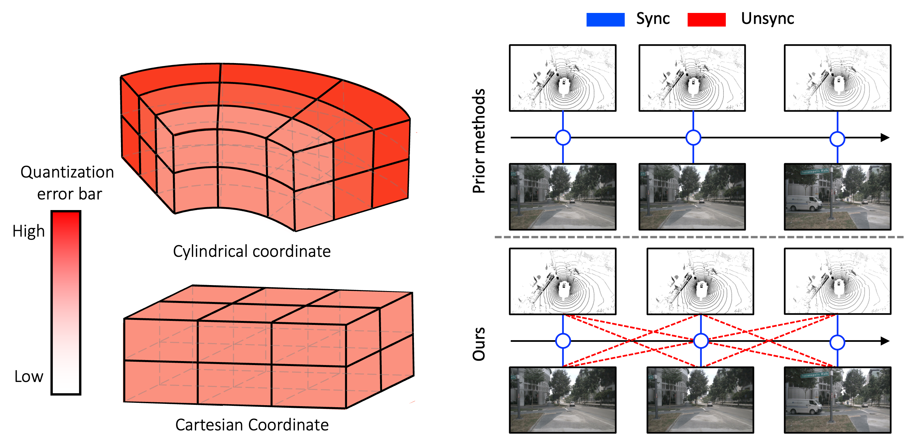
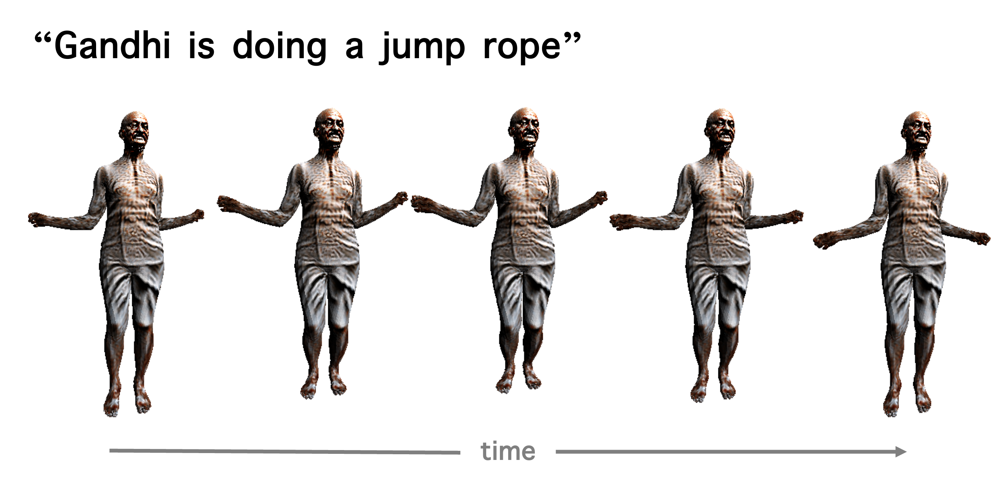

Lee Hyun
hyunlee@postech.ac.krI am AI researcher @ Samsung Advanced Institute of Technology (SAIT). I received M.S. in EE at POSTECH advised by Prof. Tae-Hyun Oh.
My research focuses on multimodal learning, LLMs, and 3D generative models, with recent interests in LLMs for materials design and alignment via reward models.
Publications

A Large-Scale 3D Face Mesh Video Dataset Via Neural Re-Parameterized Optimization
Kim Youwang, Lee Hyun*, Kim Sung-Bin*, Suekyeong Nam, Janghoon Joo, Tae-Hyun Oh
ICLR 2025 (Invited from TMLR)
[Paper / Project Page]
Kim Youwang, Lee Hyun*, Kim Sung-Bin*, Suekyeong Nam, Janghoon Joo, Tae-Hyun Oh
ICLR 2025 (Invited from TMLR)
[Paper / Project Page]

VLM’s Eye Examination: Instruct and Inspect Visual Competency of Vision Language Models
Nam Hyeon-Woo, Moon Ye-Bin, Wonseok Choi, Lee Hyun, Tae-Hyun Oh
Under review
[Paper]
Nam Hyeon-Woo, Moon Ye-Bin, Wonseok Choi, Lee Hyun, Tae-Hyun Oh
Under review
[Paper]


LaughTalk: Expressing 3D Talking Head Generation with Laughter
Kim Sung-Bin, Lee Hyun, Dahye Hong, Suekyeong Nam, Janghoon Ju, Tae-Hyun Oh
WACV 2024
[Paper / Project Page / Code]
Kim Sung-Bin, Lee Hyun, Dahye Hong, Suekyeong Nam, Janghoon Ju, Tae-Hyun Oh
WACV 2024
[Paper / Project Page / Code]

Spatio-Temporally Consistent Face Mesh Reconstruction on Videos
Kim Youwang, Lee Hyun, Kim Sung-Bin, Suekyeong Nam, Janghoon Joo, Tae-Hyun Oh
3DMV workshop @ CVPR 2023
[Paper]
Kim Youwang, Lee Hyun, Kim Sung-Bin, Suekyeong Nam, Janghoon Joo, Tae-Hyun Oh
3DMV workshop @ CVPR 2023
[Paper]

ComMU: Dataset for Combinatorial Music Generation
Lee Hyun, Teahyun Kim, Hyolim Kang, Minjoo Ki, Hyeonchan Hwang, Kwanho Park, SeonJoo Kim
NeurIPS 2022
[Paper / Project Page]
Lee Hyun, Teahyun Kim, Hyolim Kang, Minjoo Ki, Hyeonchan Hwang, Kwanho Park, SeonJoo Kim
NeurIPS 2022
[Paper / Project Page]
Work Experiences
- AI Research, SAIT, 3.2024 - present
- Graduate researcher, POSTECH AMI lab, 2.2022 - 1.2024
- Machine learning engineer, POZAlabs, 2.2021 - 1.2022
- Military service, discharged as sergeant, Vanguard Unit, Republic of Korea Army, 3.2017 - 12.2018
Academic Services
- Conference Reviewer: CVPR, ICLR, NeurIPS, ACL